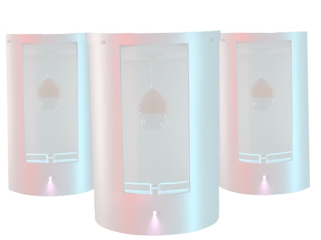
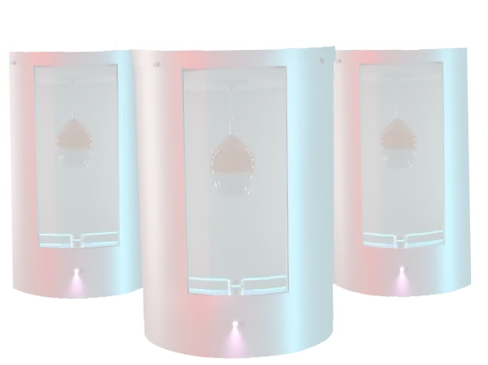

Ultraviolet Sterilizing Locker
UVDL, as the acronym suggests, is an ultraviolet sterilizing locker that is the only worry-free drink solution when using a public restroom.
The Drink Locker is a pioneering solution in the realm of public sanitation and personal hygiene. Our brand offers a unique product designed specifically to ensure beverages and small personal items remain uncontaminated in public restrooms, an environment notorious for its bacterial presence.
 

Introducing the UV Drink Locker - an innovative solution to a
pressing modern-day concern.
In a world where sanitation and health are paramount, we bridge
the gap between convenience and
cleanliness.
LOCKERS
UVDRINK
LOCKERS
UVDRINK

The Drink Locker stands at the intersection of innovation and safety, providing a solution for a pressing modern concern. In environments where one's attention may be momentarily diverted, our product serves as a vigilant guardian, ensuring beverages remain untouched and uncontaminated. While it's vital for users to understand the importance of maintaining their drink's integrity, we approach this subject with utmost sensitivity. The Drink Locker's design prioritizes not just hygiene but also an added layer of protection against any unauthorized interferences, subtly offering peace of mind in public spaces.

With the UV Drink Locker in place, individuals can rest easy knowing their beverages and personal items are protected from a plethora of bacteria, including E. coli, salmonella, and MRSA, among others.
By reducing the risk of contamination and the spread of germs in public spaces, the UV Drink Locker plays an essential role in enhancing communal health standards.
In the long run, establishments can cut down on recurrent cleaning costs, providing a more effective, one-time solution that continually protects customers.
Given its design and functionality, the UV Drink Locker is not
restricted to
restrooms. It can be installed in:
For members to sanitize personal items after workouts.
Providing employees with a quick way to disinfect personal belongings.
Ensuring students have access to sanitized personal items, promoting a healthier learning environment.
The UV Drink Locker embodies the future of public health and sanitation, prioritizing user safety without compromising on convenience. It's not just a product; it's a commitment to a cleaner, healthier world.